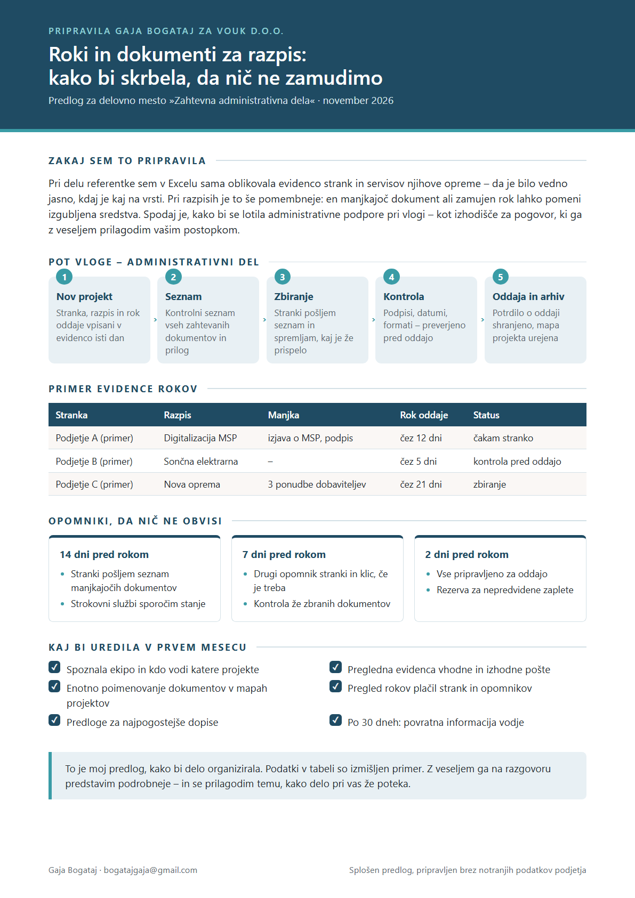

Pozdravljeni
Pri razpisih odločajo roki in popolna dokumentacija – zato verjamem, da je dobra administracija pri vas del rezultata, ne le podpora. Rada bi bila oseba, pri kateri vsak dokument najdete v nekaj sekundah in noben rok ne ostane spregledan.
Kaj prinašam Vouku
Dokumenti in poštaPogodbe sem skenirala in vnašala v pisarniški sistem (praksa v Iskri), korespondenco s strankami vodila po e-pošti.
Evidence in rokiV Excelu sem sama oblikovala evidenco strank in servisov njihove opreme ter tabele potnih in drugih stroškov.
Pisarna in izvajalciOrganizirala sem vzdrževalna dela v poslovnih objektih in z zunanjimi izvajalci dogovarjala roke.
Pripravila sem za vas
Kratek predlog, kako bi vodila administrativni del vloge na razpis – od novega projekta do potrdila o oddaji – in z opomniki skrbela, da noben rok ne obvisi.

Kontakt
Z veseljem se vam predstavim osebno.